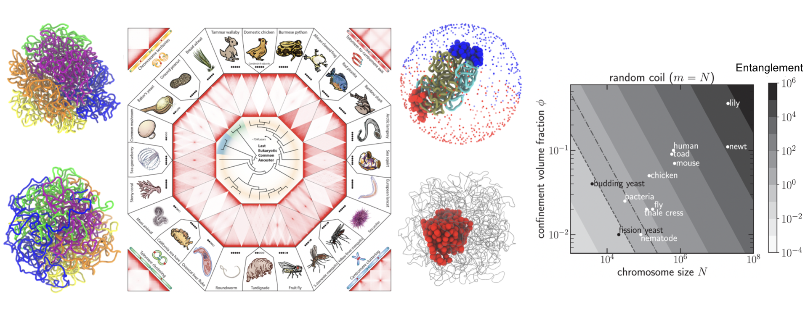

Genome Organization
The long genome (about one meter!) undergoes severe compaction (about a hundred thousand fold!)
to fit inside the nucleus (about ten microns).
One may be tempted to attribute this as a classic case of a collapsed polymer globule.
However, many observations, e.g., the genome contains chromosomes (typically, tens in number) that
occupy separate territories, and chromosomes harbor open and closed compartments, suggest that the reality is more complex.
The current notion is that the genome is organized in a hierarchical fashion.
I have used coarse-grained polymer modeling to elucidate how the collective action of various proteins constantly interacting
with the genome may be simplified into three generic forces.
Competition between these forces may bring about drastic, yet predictable changes in the genomic structure, many of
which characterize the species-wide chromosome organization.
-
Shaping the Genome via Lengthwise Compaction, Phase Separation, and Lamnina Adhesion
S. Brahmachari, V. Contessoto, M. Di Pierro, and J.N. Onuchic. BioRxiv (2022).
[PDF]
-
3D Genomics Across the Tree of Life Identifies Condensin II as a Determinant of Architecture Type.
C. Hoencamp*, A.M.O Elbatsh*, O. Dudchenko*, S. Brahmachari*, et. al.
Science 372 6545 (2021).
[PDF]
-
Chromosome Disentanglement Driven Via Optimal Compaction of Loop Extruded-Brush Structures.
S. Brahmachari and J.F. Marko,
Proc. Natl. Acad. Sci. USA 116, 24956 (2019).
[PDF]

Statistical Mechanics of DNA and Chromatin
DNA mechanics is central to protein-DNA interactions.
Proteins binding to the DNA groove bend and twist DNA leading to buildup of torsion or tension along the DNA chain.
The mechanical response of DNA to the torsion or force could bring about large scale reorganization,
like the formation of plectonemes.
Characterizing the mechanical response of DNA to torque and force is important to understand
how proteins manipulate DNA struture in the cell.
-
Coarse-Grained Modeling of DNA Plectoneme Formation in the Presence of Base-Pair Mismatches.
P.R. Desai, S. Brahmachari, J.F. Marko, S. Das, and K.C. Neuman.
Nucl. Acids Res. 48 19:10713-10725 (2020).
[PDF]
-
DNA Mechanics and Topology.
S. Brahmachari, and J.F. Marko.
Biomechanics in Oncology,
(Edited by C. Dong, N. Zahir, and K. Konstantopoulos; Springer International Publishing, 2018) pp. 11-39.
[PDF]
-
Defect-Facilitated Buckling in Supercoiled Double-Helix DNAs.
S. Brahmachari, A. Dittmore, Y. Takagi, K.C. Neuman, and J.F. Marko.
Phys. Rev. E 97, 022416 (2018).
[PDF]
-
Nucleation of Multiple Buckled Structures in Intertwined DNA Double Helices.
S. Brahmachari*, K.H. Gunn*, R.D. Giuntoli, A. Mondragon, and J.F. Marko.
Phys. Rev. Lett. 119, 188103 (2017).
[PDF]
-
Supercoiling Locates Mismatches.
A. Dittmore, S. Brahmachari, Y. Takagi, J.F. Marko, and K.C. Neuman.
Phys. Rev. Lett. 119, 147801 (2017).
[PDF]
-
Torque and Buckling in Stretched Intertwined Double-Helix DNAs.
S. Brahmachari and J.F. Marko.
Phys. Rev. E 95, 052401 (2017).
[PDF]
Gene Transcription
The trancribing motion of RNA polymerases
twist DNA, can the twist act as a mechanical regulator of gene trannscription? We find that DNA supercoiling
can mediate long-range interaction between co-transcribing RNA polymerases.
Active polymers
Activity in a coarse-grained system can manifest itself in many different ways.
A common characteristic of activity is a non-white (colored) noise spectrum, which breaks detailed balance, the hallmark of equilibrium.
I am interested in simulating polymers with a temporally correlated noise, to explore the signatures of activity
that may be observed in experiments. One such signature is an increased time exponent in the mean-squared
displacement versus time plots.